¿Quien es Taylor Swift?
Taylor Alison Swift es una cantante, compositora, productora discográfica, directora, actriz y empresaria estadounidense con 11 albumes de estudio grabados, 6 giras mundiales diferentes, más de 100 looks diferentes y con tres gatos increibles. Taylor atraviesa generaciones con sus canciones haciendola globalmente reconocida por sus incontables melodias.
La estrella pop del momento, ofrece un concierto inolvidable para sus fans, llamado "The Eras Tour". La artista interpreta canciones de sus 21 años de carrera musical, incluyendo exitos tan sonados en la radio como "Love Story", "shake it off", entre otros. El tan aclamado concierto dura alrededor de 3 horas con 40 minutos, incluyendo sus 11 albumes y dos 2 canciones sorpresa interpretadas acusticamente por Taylor.
The Eras Tour 🎤
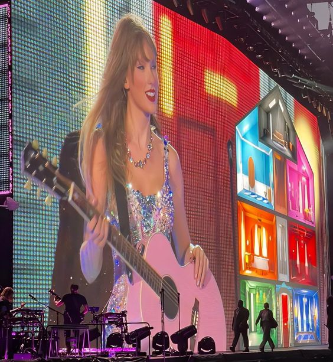El tour viaja por 10 eras diferentes: Lover, Fearless, RED, Speak Now, Reputation, Folklore, Evermore, 1989, Midnights y su ultimo album de estudio the tortured poets department
¿Estan listos para conocer cada una de las eras? ¡Vamos a verlas!
Lover
Con diferentes colores brillante, botas altas y bailarines, Taylor da inicio al show con 5 canciones reconocidas de su septimo album de estudio.
- Miss Americana & The Heartbreak Prince
- Cruel Summer
- The Man
- You Need To Calm Down
- Lover
¡Algunos de mis oufits favoritos de la era Lover!
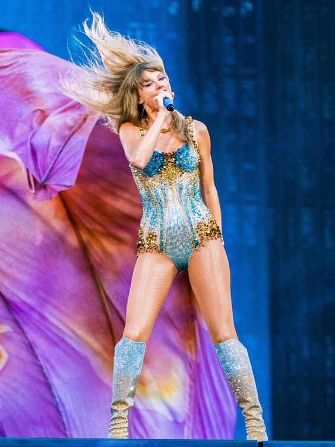 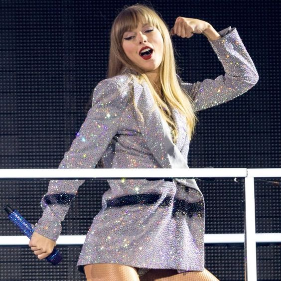Fearless
¡La era dorada de Taylor tocando el escenario! Fearless reconocido
por sus inconfundibles colores dorados, botas vaqueras, ritmos
acusticos y sus flecos volando, llega con sus 3 exitos acompañado
por la banda en el escenario. ¡Levanten sus 13 pintados!
- Fearless
- You Belong With Me
- Love Story
Algunos de mis oufits favoritos ;)
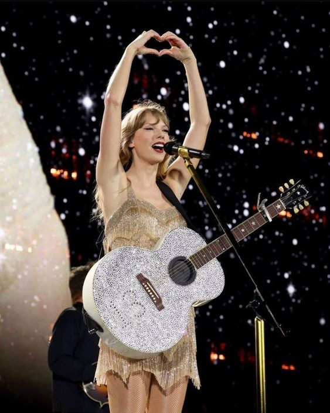 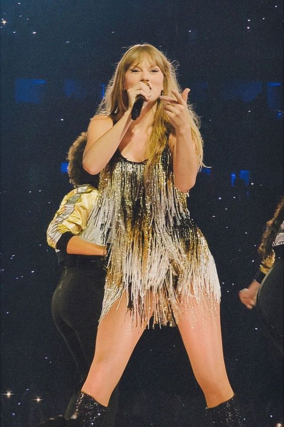RED
Rojo por aquí, rojo por allá ¡llega la era RED al escenario!
lentes, camisetas y el momento que toda swiftie espera ¡el momento
de la entrega del sombrero en 22! muy emotivo para todos. Con 4
canciones llega RED para apoderarse del escenario.
¿Por casualidad les sobra 10 minutos extra?
- 22
- We Are Never Ever Getting Back Together
- I Knew You Were Trouble
- All Too Well (10 minutes version)
¡Mis remeras favoritas de RED!
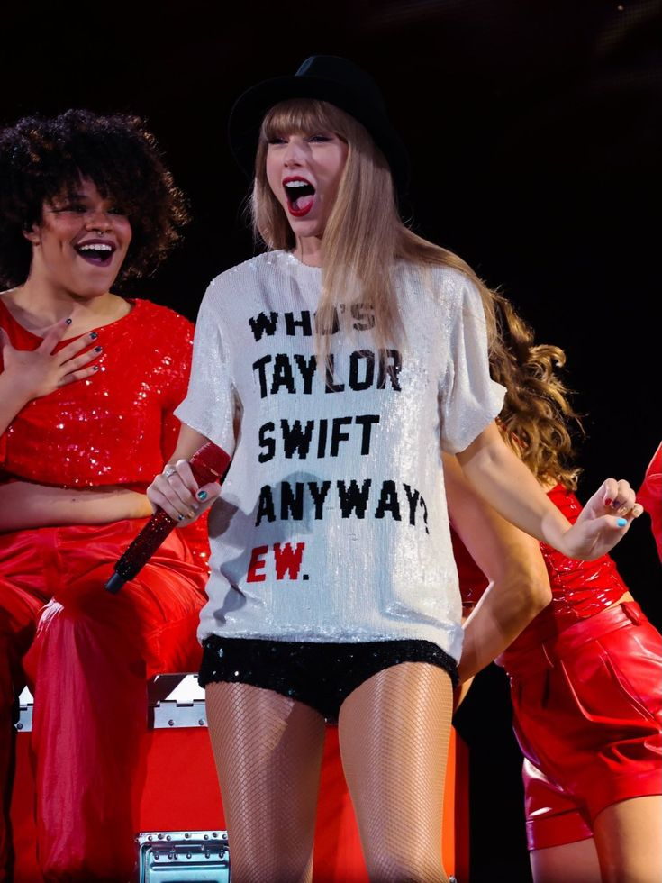 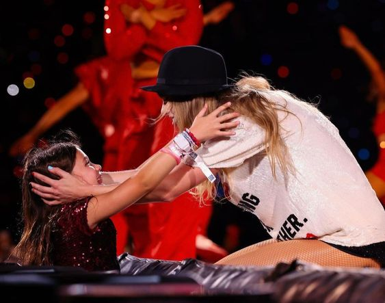Speak Now
¡Speak Now llega al escenario con la canción soñada!
- Enchanted
Anteriormente, en el 2023 Taylor había agregado al setlist "Long Live" interpretada por ella y su guitarra cuando saco del vaul "Speak Now (Taylor´s version). A principios de este año la ha sacado y solo quedo "Enchanted" con sus hermosos vestidos de princesa. ¡Te extrañaremos "Long Live"!
¡Mis vestidos favoritos de Enchanted!
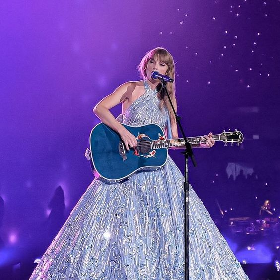 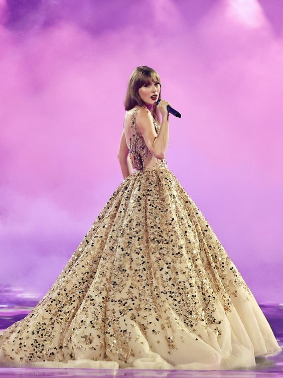Reputation
¡Serpiertes y más serpientes, llego reputation! personalmente, una de mis eras favoritas.
- …Ready For It?
- Delicate
- Don’t Blame Me
- Look What You Made Me Do
Una curiosidad de esta Era en particular es que ¡Taylor lleva mas de 100 shows sin cambiar el traje! y se puede notar al verlo de cerca; cocido y ¡hasta pegado con cinta!
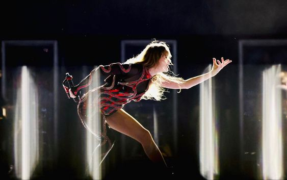 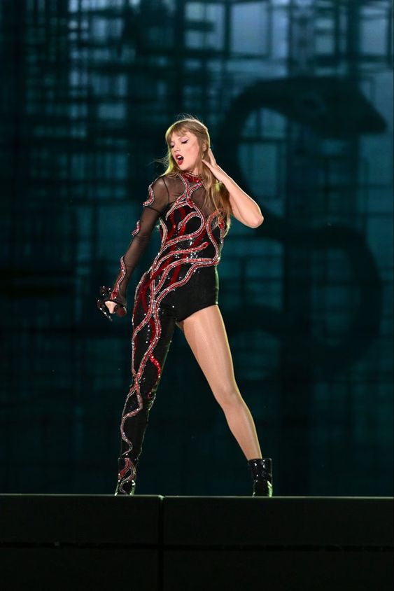Folkevermore (Folklore+Evermore)
¡Las Eras Folklore y Evermore se han combinado! con una gran
escenografia, Taylor combina las dos Eras más importante para los
swifties, aunque esto ha hecho que haya tenido que sacar alguna
que otra canción de por medio. Siempre en nuestros corazones
perfomance de Tolerate It.
- Cardigan
- Betty
- Champagne problems
- August
- Illicit affairs
- My tears ricochet
- Marjorie
- Willow
1989
Algo que ha destacado últimamente a la Era 1989 de las demás ha sido el favoritismo de vestuario que le ha dado Taylor para esta nueva etapa del tour.
Colores brillantes, botas diferentes, rojo, naranja, verde y ¡muchos colores más se pueden apreciar en las 5 canciones elegidas para el tour!
- Style
- Blank Space
- Shake It Off
- Wildest Dreams
- Bad Blood
Algunos de los oufits que pudimos ver en los últimos shows
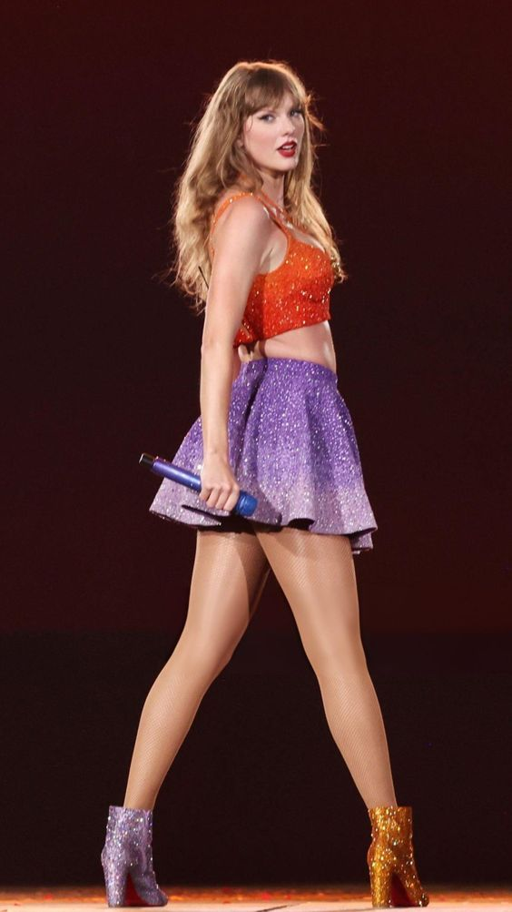 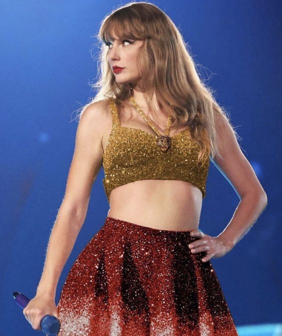The Tortured Poets Department
Recien integrada esta Era, TTPD sorprendio a todos en el estadio cuando Taylor aparecio con coreografias y vestuarios nuevos acompañados de visuales en blanco y negro para esta Era especifica.
7 canciones fueron las elegidas por Taylor para interpretar con un ambiente burlesque y teatrero. Con vocales unicas, coreografias y muchas plumas.
- But Daddy I Love Him
- So High School
- Who's Afraid of Little Old Me?
- Down Bad+Fortnight (mash-up)
- The Smallest Man Who Ever Lived
- I Can Do It With A Broken Heart
Surprise Song
Una de las partes favorita de las swifties son las Surprise Song en el tour. Esta sección trata de Taylor cantando acusticamente una canción en guitarra y otra en piano, sin duda haciendolo un momento intimo entre los fans y ella.
Una de mis Surprise Songs favoritas son las del show de Argentina, presentando la primera noche "The Very First Night en guitarra y Labyrinth en piano", la segunda "mashup de Is It Over? y Out of The Woods" en guitarra con "End Game" en piano y la última noche "Better Than Revenge" en guitrra y Slut! en piano.
Las Surprise Songs son el momento más esperado por los swifties, tanto en persona como en redes.
Midnights
Para finalizar la noche, Taylor cierra con su decimo album de estudio: Midnights. Con coreografias, botas altas azules, brillos y muchas risas, da por finalizado las 3 horas y medias de show con 7 canciones.
- Lavender Haze
- Anti-Hero
- Midnight Rain
- Vigilante Shit
- Bejeweled
- Mastermind
- Karma
Merch Oficial del Tour
Como todo Tour, Taylor Swift ha sacado variedad de merchandising del Eras para toda la gira. Desde remeras, buzos, baby tees, totebags, posters, pulseras ¡y mucho más!
¡Toda esta merch también la puedes encontrar en su sitio oficial! (también la nueva de TTPD)
Sitio Oficial de Taylor